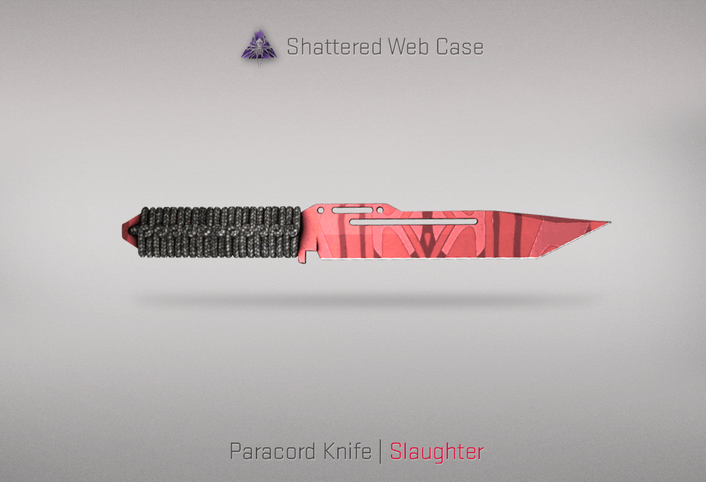
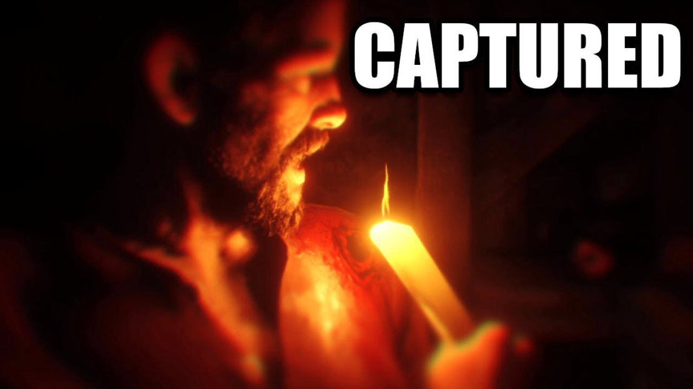
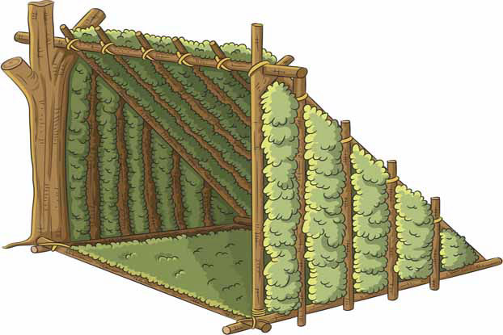
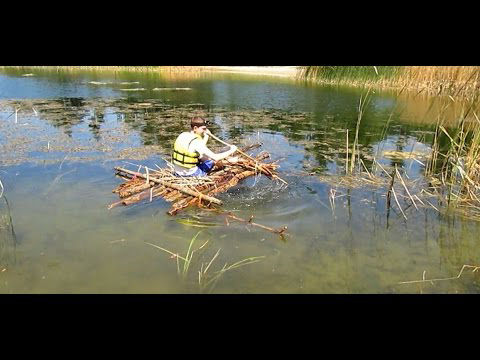
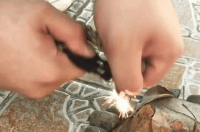
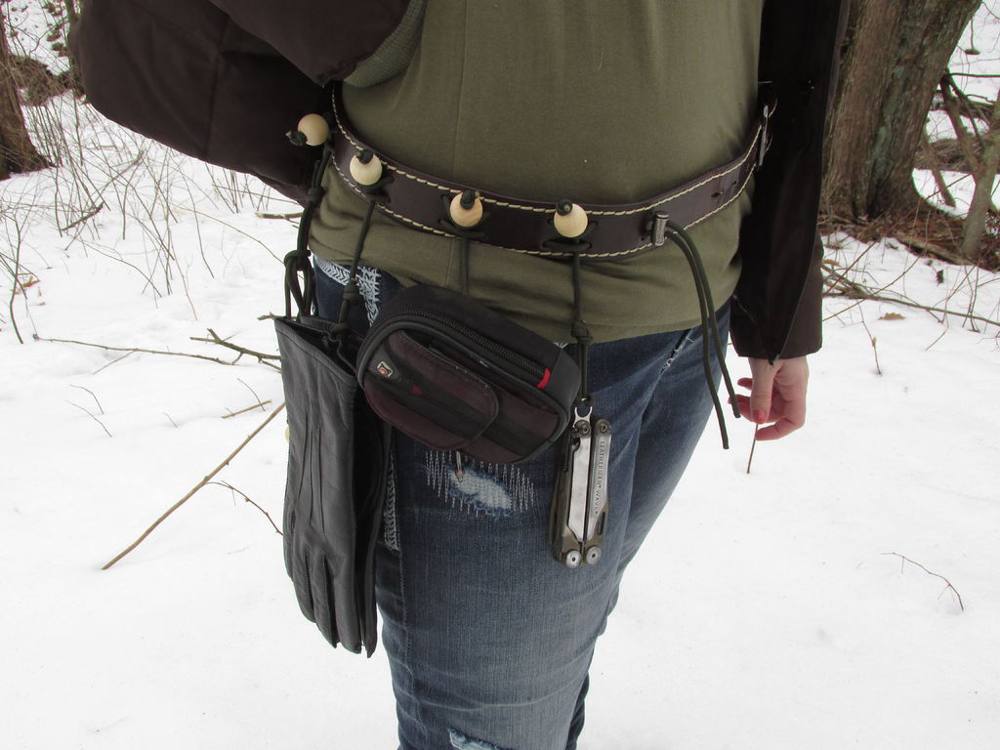

Paracord can help you survive the untamed biomes wherever you go and it has so many purposes that can save your soul no matter what happens this is good for adventures just like lara croft or nathan drake.
Weapon
if your stranded in a unknown area and it has so many materials that can combine the weapons well this is good enough to fight back wheter if it's that a person or an animal. paracord is handy we have upgrade our creativeness firstly there is Paracord knife and paracord braclet dagger. the paracord knife it's already a knife but the handle texture is soft of it's nylon fiber however this can be used to protect yourself from an unknown hostiles the knife can be like a rope too wheter for combat or for climbing situations. meanwhile the bracelet with knife is handy as swiss knife however it only lacks from damage this is good for makeshift shivs or makeshift whip for makeshift knife kindly pull the burned part of the paracord and pull it until you gathered the paracord now get the buckle knife find a thick stick so for the handle the paracord can be liquidized as glue this can stick the stick onto the buckle blade and there you go you have a sturdy shiv. from paracord knife if you want to turn it to a knife rope cut the paracord from the bottom and pull until you have long paracord now after that knot it and burn a bit and now you have a knife rope. for bows if the string itself was damaged you can pull the inside of paracord to retrieve thin white nylon and kindle the edge of the bow for the string and there you go. if you want a mace find a well-rounded rock and knot it and don't forget to lightly kindle it so that you won't hurt yourself. same as the nunchuck stick it kindle it and you can upgrade with small daggers under it too.

tools
problem with the fishing rod don't worry the string of the paracord will might help to replace it. this can help any handy tools for the grip. the paracord is also a tool which can repair when it needs. teared fabric can support it. paracord can replace your belt like a tight rope when there's a problem. traps can be help too with paracord
First - aid
wounded? No problem either you can stitch or cauterize it. firstly pull the burned part of the paracord braclet second cut the burn part and when you see a white strings wire-like pull and began stitching of course you need a needle and put it in the needle and carefully stitch it if you want to surely stitch you cauterize to to cauterize first you need light the paracord and do not heat gently but do it intensely so the paracord will spill like a candle and if you want to stick it right on the wound.

Shelter
well this can helped within with this instructions ok tie both the sticks and

HAMMOCK
SLEEP
RAFT
BOAT

Fire
to survive the wild yes you may gathered all the ingredients or materials but you need to light things up a bit. fire is great to scare wolves, bears, cougars, or hawks those creatures will surely devour you to ignite some woods you need to find dried leaves, small hays, thin sticks, rocks, and lastly a great amount of wood. if you can't scorch it well if your lucky if you weared your paracord bracelet well thank goodness it's a miracle. now pull the burned spot of the paracord and pull it meaning break it so that the string itself will expand more and more. now if you have sticks and both friction it and it will kindle if your lucky that your bracelet comes with flint buckle you might want to snap the flint buckle and the spark will throw on to your campfire if you are successful of your survival. well done to the person who is reading this you have accomplished it you can now cook food or smith something.

HIKING
CLIMB

Address
17-7 Mount Street, Auckland CBD, Auckland 1010, New Zealand